⟳
가로로 돌려주세요

숨은 유한하고, 바다는 도망가지 않는다
시작
이어하기
설정
2026 미니게임 메이커스 챌린지 출품작
물질하는 법
이동
마우스를 끄는 방향 · 방향키 / WASD
상승
Space 홀드 · 모바일은 우하단 버튼
채집
가까이 가면 저절로. 움직이면 취소
긴급 방출
Shift · 살려면 놓아야 할 때가 있다
수면에 뜬
테왁
에 닿으면 망사리가 비워지고 그만큼은 안전해집니다.
숨이 다하면 동료가 끌어올려 줍니다. 잃는 것은
그때 손에 든 것뿐
입니다.
들어가자
일지
설정
타이틀
₩ 0
물질 1일째
구매
장 비
오늘 어디로 나갈까
‹
›
‹
도감
1일째
해녀의 하루
수확
₩0
최고 수심
0.0m
아직 물질한 날이 없다.
도 감
0
/ 12
›
불턱으로
여
2:30
0.0
/ 10.0kg
0개
100
0.0m
드래그 이동 · Space 상승 · Shift 방출 · Esc 나가기
▲
상승
방출
1일째 물질
수확이 없다.
다음 물때를 노려보자.
오늘 벌이
0
최대 수심
0.0m
판 매
하군
▼
중군
예
동료 해녀
그래
내가 만난 순간
—
닫기
설 정
소리는 시작 후에 켜집니다.
전체 음량
효과음
불턱 음악
품질
느리면 낮추세요.
저
중
고
닫기
숨 비